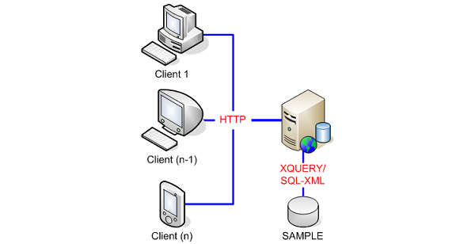
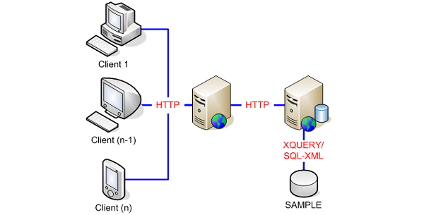
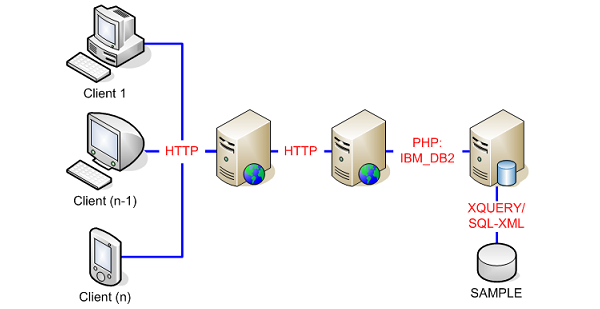

|

|
Deployment Architecture Models
|
In a typical Service Oriented Architecture setup, more than one physical
server is used to gather the requested data to be presented to the user,
and often, more than one application is involved.
The DB2 Health Monitor Sample Application aims to simplify the concept behind SOA by operating as a stand-alone application and using a single physical machine deployment model. However, it can be set up in a multi-tier environment as shown in several of the diagrams below. |
One Tier Deployment Model
The diagram below depicts a single physical server setup for an SOA
application. While this is not the typical scenario, the DB2 Health
Monitor Sample Application, with its lightweight technology, and even with its
accompanying software, can still operate successfully on a single desktop PC. A diagram
showing this scenario, where the Web server and data server reside on the same machine can be
found below:

Two Tier Deployment Model
The diagram below depicts a two-tier setup for an SOA application. This scenario places
the client components (that is, the
Web Service Consumer GUI
and the
Web Service Consumer
) on the first-tier, and
places all server components (that is, the
Web Service Producer
,
Web Service Producer DB
,
and DB2 9 server) on the second-tier. For the
Web Service Producer
,
the DB2 9 server and database are always local (that is, on the second-tier).
This scenario is possible and practical at the same time due to the lightweight, PHP-based
service that sits on the data server.

Three Tier Deployment Model
The diagram below depicts a traditional three-tier setup where separate machines
are allocated for each aspect of the architecture. That is, a Web server to host
the
Web Service Consumer
and
Web Service Consumer GUI
, a Web server to host the
Web Service Producer
and
Web Service Producer DB
, and a
data server to host the required database. In this case, the second-tier would
require a copy of the DB2 9 client to communicate with the DB2 9 server and the database
would have to be catalogued on this server. In other words, this scenario shows the
Web Service Producer
being able to provide health monitoring information about any remote DB2 9 database.
While any one of these tiers may have multiple physical servers for duplication purposes
(for avoiding a single point of failure and to handle heavy Web traffic), the diagram
below shows the simplest scenario:

© Copyright IBM Corp. 2007. All rights reserved.
IBM®, the IBM logo, DB2®, AIX®, and pureXML™ are
registered trademarks of International Business Machines Corporation in the
United States, other countries, or both.
Zend and Zend Core are registered trademarks of Zend Technologies Limited,
in the United States, other countries, or both.
Mozilla® and Firefox® are registered trademarks of the Mozilla Foundation in the
United States and other countries.
Microsoft, Windows, Windows NT, Internet Explorer®, and the Windows logo are
trademarks of Microsoft Corporation in the United States, other countries, or
both.
Linux is a registered trademark of Linus Torvalds in the United
States, other countries, or both.
Other company, product, or service names
may be trademarks or service marks of others.